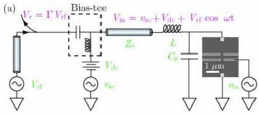
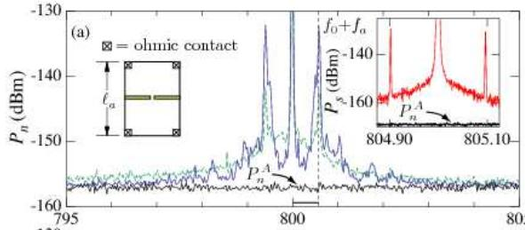

物理图像
量子点接触（quantum point contact，QPC）是表面栅极在二维电子气（2DEG）中挤压出的一条窄通道，宽度可与电子费米波长相比拟。调节两侧隧穿势垒栅压 ，通道电导出现量子化台阶
直到完全夹断（pinch-off）。在最低一阶平台与夹断之间的过渡区，电导–栅压曲线斜率最大、对外局域静电势的响应最灵敏，此处通常对应 。把被测半导体量子点放在 QPC 旁边，二者之间只通过电容耦合，量子点电荷改变一个电子 时，QPC 通道内的势垒高度微微抬高或降低，电导发生一个台阶式跳变——这正是 QPC 作为”邻位电荷传感器”的物理图像。
QPC 之所以成为少电子量子点实验中不可替代的读出器件，是因为它只需要一条与被测点并联而不串联的探测通道：被测点的源漏可以完全关断（少电子极限下隧穿电流已无法测量），只要 QPC 仍保持有限电导，电荷态跳变就能被检测到。
工作点选取
QPC 是非线性器件，灵敏度强烈依赖于工作点位置。沿夹断方向把栅压 从完全关断推到打开，QPC 电导依次出现量子化平台 ；最佳传感区在最后一级平台底部，即
进一步指出更严格的判据：当 （即 ）时 QPC 对量子点电荷变化的电导响应灵敏度最大。物理上，这个区域通道仅剩一两个亚带，势垒顶端轻微静电势改变就能显著调制透射系数。实际器件中 QPC 通道常不能形成理想单调量子化平台，而是在邻近栅极作用下自身演化为单量子点结构并出现库仑阻塞，此时把工作点改设在库仑峰两侧斜率最大处同样可获得最佳灵敏度。
工作点的稳定性也至关重要：栅压 的漂移会把工作点滑出灵敏区，造成信号丢失；这也是提到的阻抗匹配困难与工作点漂移问题，需要周期性重新标定。
理论模型：电导与势的耦合
把被测量子点的电荷变化 看成对 QPC 通道势垒高度 的微扰，最简单的线性响应给出
其中 是 QPC 与被测点之间的互电容，负号来自同号电荷相斥。把 QPC 视为准一维通道、仅剩最低亚带，Landauer-Büttiker 公式给出
其中 是横向限制频率；夹断区 时电导对 的导数最大，于是工作点天然落在夹断附近。这一指数灵敏度解释了为什么”夹断前一两个平台底部”是 QPC 传感器的最佳工作点。
灵敏度也可以用”杠杆臂” 量化： 越大，一个电子引起的 QPC 静电势改变越显著，电导跳变越容易被检测到。耦合强弱由两点的几何距离与中间栅极决定，实验中通常通过在 QPC 与 QD 之间插入细长的绝缘电极来微调。
三种直流读出方式
按 QPC 端电流是否经外加调制解调，QPC 电荷传感可分三种实现：
- QPC 直流输运：QPC 源漏两端加微伏量级交流激励与几百 直流偏压，用锁相放大器读取电导。QD 电荷跳变时 QPC 电导出现台阶。
- QPC 交流输运：与直流输运原理相同，只是交流频率更高（如锁相 SR830 的几十 kHz 量级），抗干扰能力增强；但交流信号可能在 QD 中感应附加噪声。
- QPC modulation：在 QD 的某个 plunger 电极上叠加 2–3 mV 的小幅交流调制（约几十 Hz 到几 MHz），同时在 QPC 源漏加几百 直流偏压，读取的解调电流正比于 ，相当于 QPC 输运信号的物理微分信号。这一信号在少电子区比 QPC transport 更清晰，因为调制只放大电荷跳变处的边缘，背景被滤掉。
三种方法给出的电荷跳变位置完全一致（图见），差别在灵敏度与抗干扰：直流输运绝对幅度最大、QPC modulation 对比度最高、AC 输运抗工频干扰能力最强。
从直流到射频：RF-QPC
直流 QPC 测量的带宽受直流线缆寄生电容与锁相积分时间限制，通常只在数十 kHz 量级），不足以追踪单次隧穿事件或与脉冲操控同步。把 QPC 接入阻抗匹配谐振电路，再以射频反射方式读出，构成的 RF-QPC 把带宽推到 MHz–百 MHz 量级）。
阻抗匹配与谐振电路
射频反射读出的关键是让 QPC 阻抗与 同轴线特征阻抗匹配。电压反射系数
其中 为 QPC 的实测负载阻抗，。阻抗完全匹配时 ，全部射频功率被 QPC 吸收；完全失配时 ，信号被全反射回射频源。把 QPC 与一个并联到地电感 串联，可构造 LC 谐振子
其中 是 QPC 源漏对地的寄生电容。砷化镓样品 –，石墨烯样品因二维材料覆盖面积大而 –，极端情形可达 以上，寄生电容越大带宽越窄。实验常用 、 给出 。
谐振电路的有载品质因子由 QPC 阻抗、、 共同决定。当 时电路工作在欠耦合区，带宽由 决定，但 QPC 工作点在 时难以进入欠耦合区；当 时为过耦合区，带宽由特征阻抗 决定。RF-QPC 一般工作在过耦合区。
灵敏度公式
设 QPC 电导以调制频率 在工作点附近正弦变化 ，反射信号在载波两侧出现一对边带（sideband），幅度比与反射系数变化 挂钩。用频谱仪测得上边带信噪比 （dB），则射频 QPC 的电导灵敏度为
其中 为频谱仪分辨率带宽）。 因子来自上下两个边带，最终解调后只保留上边带能量。已知 （杠杆臂系数 与一个电子电荷的乘积），即可得电荷灵敏度
实测砷化镓 RF-QPC：、、，得电导灵敏度 ，电荷灵敏度 ）。工作在 -90 dBm 射频功率下，扫描边带 SNR 与功率成正比；更高功率下 SNR 改善，但辐射反作用（back-action）增强，会向量子点注入散粒噪声。
带宽与速度
带宽定义为扫描调制频率时上边带 SNR 跌落到 -3 dB 的频率。砷化镓 RF-QPC 典型带宽 1–10 MHz 量级。带宽使得 RF-QPC 可以追踪单次隧穿事件——对 的灵敏度，2 MHz 带宽对应的最小可探测电荷 量级，可分辨一个电子 所需积分时间约 。
更高速度要求更高带宽——把 RF-QPC 与快速锯齿波扫描结合，可在数十秒内完成传统方法数十分钟的相图采集，测量速度提升约两个量级。多路复用（multiplex readout）则借助不同载波频率在同一根射频线上同时读出多个 QPC，每个 QPC 用一个独立解调通道。
参数与量级
| 量 | 典型值 | 来源 |
|---|---|---|
| 工作点电导 | 约 （最佳灵敏区） | ； |
| 工作点电导上限 | （） | |
| 调制信号幅度 | –（QPC modulation） | |
| 直流偏压（QPC 端） | 几百 | ； |
| 锁相交流激励 | （SR830） | ； |
| RF-QPC 谐振频率 | （GaAs，，） | |
| 寄生电容 | –（GaAs）；–（石墨烯） | |
| 电导灵敏度 | ； | |
| 电荷灵敏度 | （GaAs RF-QPC）；（反射式超导腔） | |
| RF-QPC 带宽 | （GaAs）；–（综合文献） | ； |
| QPC 器件尺寸 | 通道长度 （GaAs，2DEG 密度 ，迁移率 ） |
实验特征与典型应用
逐个数电子。 QPC 与被测 QD 之间的电容耦合不要求电流流过 QD 本身，因此可以在 QD 与源漏完全电隔离的少电子区工作。逐个减小 plunger 栅压，QD 中的电子逐个排出，每排出一个电子 QPC 电导跳一次台阶，由此可以精确标定 QD 的绝对电子数）。这一方法适用于库仑阻塞区电子数严格为整数的特点，是少电子量子点实验的标准初始化手段。
电荷稳定图与偏压三角。 QPC 可以逐栅压扫描绘制 QD 内电子数分布（即电荷稳定图），也可与 QD 源漏偏压同步扫描得到蜂窝图或偏压三角形。由于 QPC modulation 的微分信号对比度高，常用此方法获取双量子点完整相图。
自旋–电荷转换。 QPC 本身只测电荷，要读自旋需要先把自旋态映射到电荷分布。典型机制是泡利自旋阻塞（Pauli spin blockade）：双量子点中 单态隧穿被允许、三态隧穿被禁止，隧穿后电荷态不同，再由 QPC 读取。这构成了单发自旋读出的基础：2004 年 Elzerman 等人在 GaAs 双量子点上首次实现 QPC 单发电荷读出，进而完成单电子自旋读出。
单发读出与隧穿动力学。 射频 QPC 的微秒级积分时间已经短于单次隧穿事件的平均间隔，可用阈值判定方法读取单次隧穿。这也使得 QPC 可以作为时间分辨工具研究隧穿动力学、朗道–齐纳过程与电荷噪声谱。
电荷噪声谱学。 QPC 把 QD 内电荷的微弱涨落放大为电导信号，因此即使在 QD 库仑阻塞区（直流电流为零），仍可经 QPC 通道读取低频 噪声，是表征电荷噪声环境的常用手段。
局限与替代方案
- 工作点漂移：随栅压、磁场、温度变化，QPC 工作点会漂移出灵敏区，需要周期性重新标定。
- 电荷–自旋分离：QPC 不直接读自旋，所有自旋测量都要先经自旋–电荷转换；直接读自旋需要栅极色散读出或色散腔读出等其它机制。
- 射频反作用：过高的射频功率会向量子点注入散粒噪声与热激发，破坏被测态，需要折中灵敏度与反作用）。除这类经典功率反作用外，传感耦合本身还有量子反作用——库仑耦合构成 which-path 探测通道、以可定标的速率侵蚀被测系统相干性，其机制与能标见电荷传感反作用与 which-path 退相干。
- 寄生电容受限：在石墨烯或大面积 2DEG 样品中寄生电容过大，谐振频率过低、带宽显著变窄，需要重新设计谐振电路（如引入可调电容）。
散粒噪声极限的 RF 模式
传感器灵敏度的终极标尺是散粒噪声极限：RF-QPC 在数十 MHz 带宽下运行时，电荷灵敏度不由后级放大器噪声限制，而是由 QPC 自身的散粒噪声（分流噪声 ， 为 Fano 因子）决定——这是量子传感器的基本极限。实测达到散粒噪声极限意味着传感器设计已无多余的 classical 噪声源，进一步的灵敏度提升只能靠增大测量带宽或量子噪声压制。

RF-QPC 散粒噪声极限：数十 MHz 带宽的电荷检测——灵敏度由 QPC 自身散粒噪声决定。图源：Roch et al. (2007)，Fig. 1。

灵敏度标定：RF-QPC 的电荷灵敏度随带宽/偏置的变化——散粒噪声极限的定量验证。图源：Roch et al. (2007)，Fig. 2。
与其他概念的关系
- 库仑阻塞给出被测点的能量判据：阻塞区电子数固定，QPC 的台阶跳变才能与离散电荷变化一一对应。
- 电化学势对齐条件决定 QD 在何时发生隧穿，从而决定 QPC 信号跳变位置。
- 隧穿耦合控制被测点与源漏的耦合强度；少电子实验要求弱耦合，但 QPC 不依赖这一耦合，因此可以在 QD 源漏完全关断时仍然工作。
- 电荷稳定图是 QPC 扫描得到的主要图样；蜂窝图与偏压三角形是 QPC 调制测量的标准产出。
- 射频反射测量是 QPC 的高频化版本，引入阻抗匹配电路后带宽可达 MHz–百 MHz 量级，是从直流 QPC 到高速读出的桥梁。
- 栅极色散传感通过把 QD 串入谐振腔栅极直接读取电容变化，无需 QPC 通道，是另一种非破坏性电荷传感方式，适合多比特共用一条射频线的场景。
- 色散读出把电荷态映射为微波谐振腔的频率/相位偏移，与 QPC 同为非破坏性电荷传感手段，但作用机制是色散频移而非电导调制。
- 电荷噪声是 QPC 主要噪声源之一：低频 噪声既来自 QPC 自身通道也来自邻近 QD 的局域陷阱，QPC 也是测量这种噪声的工具。
- 量子霍尔边缘通道电荷传感器是同一只 QPC 在强磁场 IQHE 平台下的另一副骨架：传感信号从零场电容耦合的电导调制换成对向边缘态在施主上的背散射，把灵敏度空间局域化到 QPC 下方一个施主体积内。
参考文献
- QPC/SET 电荷传感与自旋读出的集成：Elzerman et al., Nature 430, 431 (2004)、Zwanenburg et al., RMP 85, 961 (2013)。
完整文献库（含各篇站内全文页）见 参考文献库。